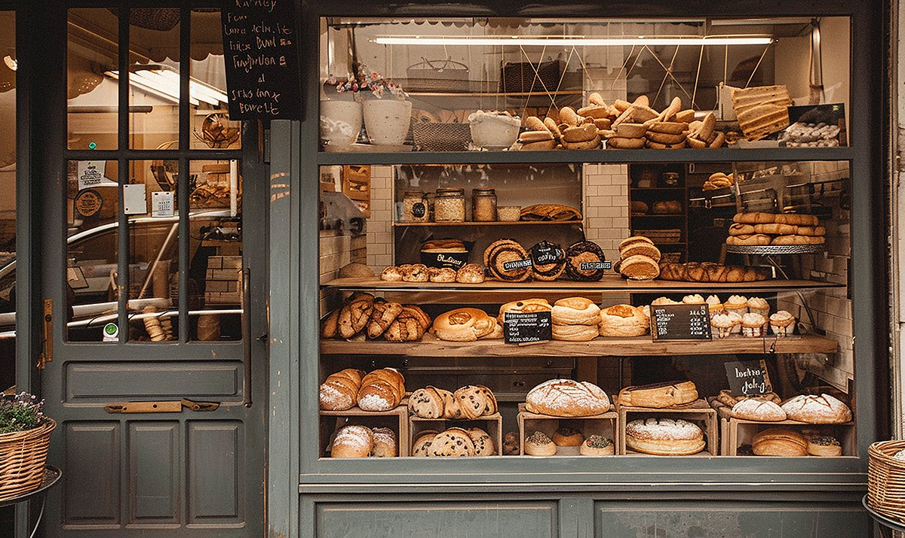

Welcome to North Star Bakery
Welcome to North Star Bakery, your neighborhood bakery for fresh bread, pastries, and cakes baked by hand every morning. Whether you are a commuter grabbing breakfast on the way to work, a family picking up a weekend treat, or an event planner ordering for a special gathering, we are glad you stopped by.
Listen to a Welcome Message
Hear a short hello from our bakers and learn what is fresh from the oven today.
What We're Known For

Neighbors know us for our crusty artisan breads, flaky morning pastries, and celebration cakes made to order. Everything is mixed, shaped, and baked in small batches right here in the shop, using simple ingredients and recipes our community has loved for years.
- Artisan breads baked fresh daily
- Pastries and muffins for breakfast on the go
- Custom cakes for birthdays, weddings, and events
- Friendly pre-orders ready when you need them
Featured Item of the Week

This week we are featuring our Honey Oat Loaf, a soft, lightly sweet sandwich bread made with local honey and topped with rolled oats. It is perfect for toast, sandwiches, and sharing at the family table. Stop in for a loaf, or pre-order one on our Contact and Pre-Orders page so we can set it aside for you.
Visit Us: Hours and Location
You will find us on Main Street in the heart of the neighborhood, just a short walk from the morning bus stop.
- Monday to Friday: 7:00 a.m. to 6:00 p.m.
- Saturday: 7:00 a.m. to 4:00 p.m.
- Sunday: 8:00 a.m. to 2:00 p.m.
See our Contact and Pre-Orders page for full location details and to send us a question or pre-order request.